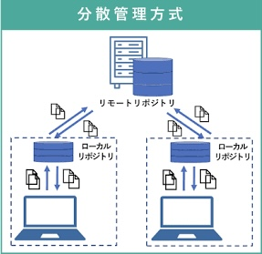
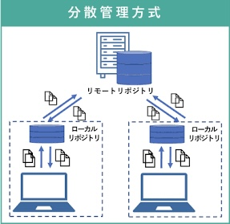

ソースコードとは、プログラミング言語で書かれた命令文のこと。
どのようなものか
- バージョン管理システムの一種
- ファイルの変更履歴を記録できる
- 誰がいつ、どこを直したのか追跡できる
- チームで同じプロジェクトを進めるときに便利
gitは、分散型のバージョン管理システムに分類される。
分散型とは、開発者一人ひとりがプロジェクト全体の履歴を保持し、ネット接続や中央サーバーに依存せずに作業できるバージョン管理の仕組み。

引用したサイト
分散型とは、開発者一人ひとりがプロジェクト全体の履歴を保持し、ネット接続や中央サーバーに依存せずに作業できるバージョン管理の仕組み。

引用したサイト
htmlに関して
htmlとは HyperText Markup Language の略。
マークアップとは、文章に意味を表す印（タグ）をつけること。
どのようなものか

引用したサイト
マークアップとは、文章に意味を表す印（タグ）をつけること。
どのようなものか
- Webページの骨組みをつくるマークアップ言語。
- テキスト、画像、リンク、表などを配置するために、タグを使う。
- ブラウザで表示される。
引用したサイト